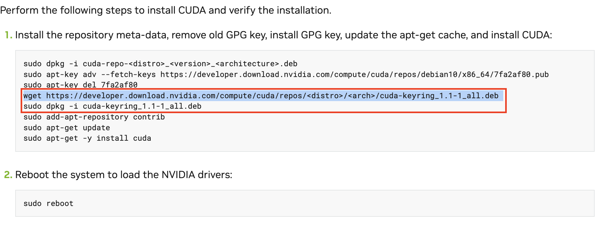
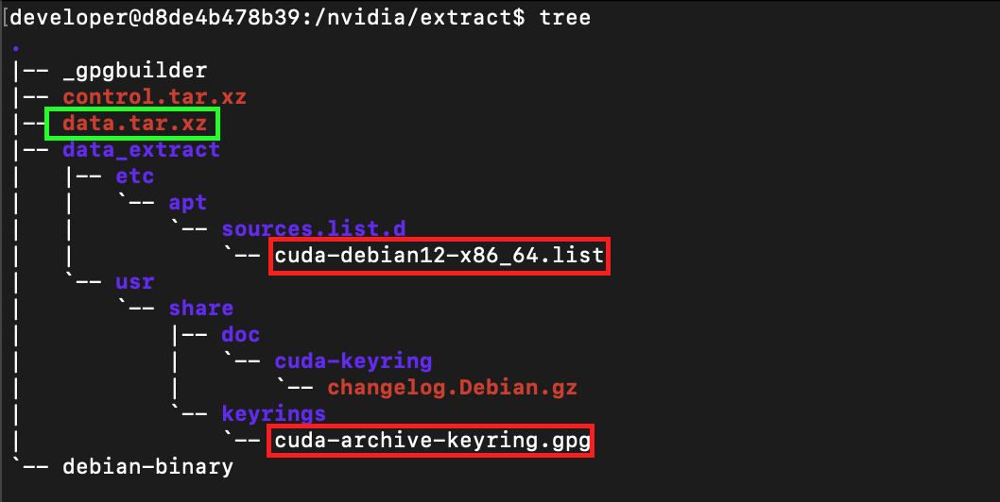
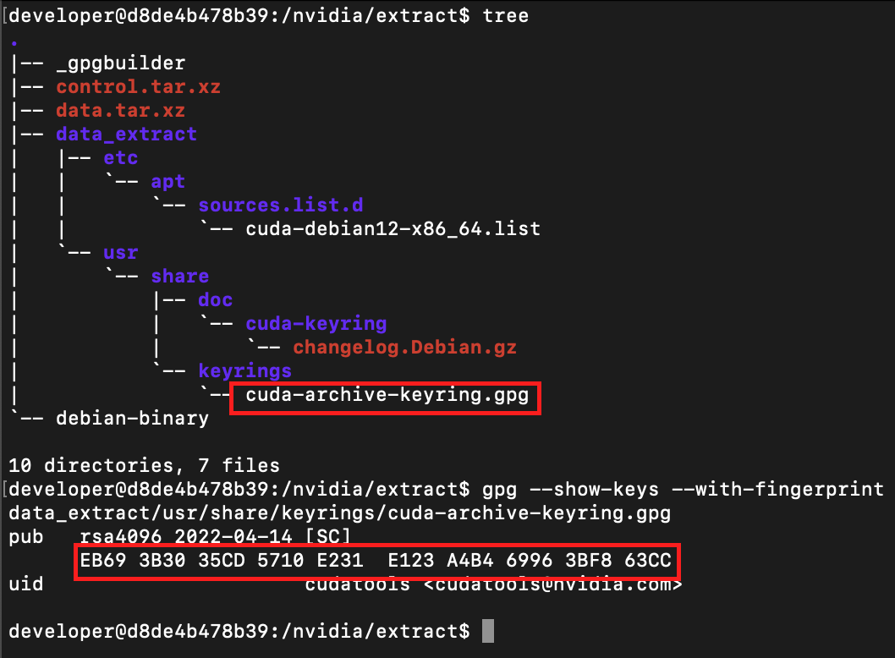
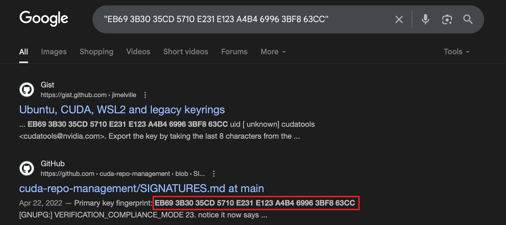
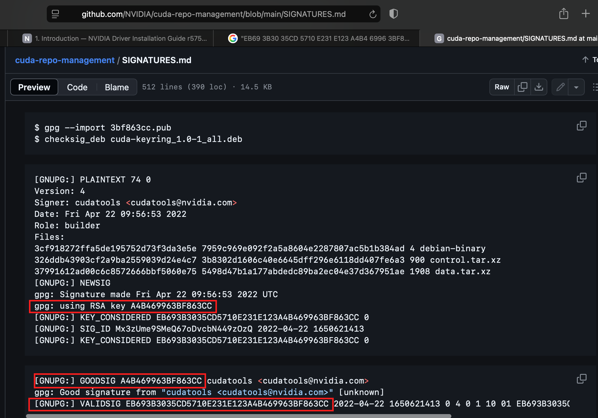

Into the .deb: What am I Installing?
So there I was, trying to install Nvidia drivers on my old homelab desktop. As you would expect from a reasonable engineer, I started with doing a bit of good ole RTFM (read the field manual; or do you due diligence and look at the documentation).
Generally, vendor documentation is a good place to start, however, looking at Nvidia Cuda Quick start Guide I saw this:

The highlighted section translates into: “please thoughtlessly download the .deb package and install it.” It almost looked like a former government employee wrote this. In the spirit of government documentation, instructions like these should be marked with “WTF” (“Without Thoughtful Foresight”), since their content clearly indicates that the author did not seem to think through the results.
The issue with the instructions above is: they ask to blindly download and install a trust anchor (a thing that validates trust relationships with other things to be istalled) without validating the trust anchor itself. It may be a bit confusing to a casual observer unfamiliar with he software validation process by package mangers on Linux systems.
Generally, in it is a good idea to understand the basics of the software validation hygiene. Let’s break this down.
When the software is distributed, especially for a Linux system, there is a healthy expectation of software integrity validation mechanisms to be in place (by a package manager, or checksum verification by a sys admin/devops/cyber person). The package manager relies on public GPG keys, distributed by the software authors. If the GPG keys are not already on the system, it is expected that their fingerprints are validated before importing those GPG keys into the OS key store. Such fingerprints are typically posted by the software vendors and can be generated with the following command:
gpg —show—keys —with-fingerprints <keyname>
The expected software validation process on a Linux system with a package manager is as follows:
-
Download software vendor’s public GPG key
-
Validate vendor’s public GPG key fingerprint
-
Import GPG keys into OS’s key stroke
-
Install software with a package manager (package manager will perform GPG key validation).
Generally the package manger will throw an error and stop the installation process, if the software it tries to install fails the validation process against the vendor’s public GPG key.
With the process above in mind let’s dig in a bit deeper by extracting the .deb mentioned in the Nvidia driver installation instructions. .deb packates are ar archives which contain three parts:
debian-binary: a text file containing version of.debpackage formatcontrol.tar.xz: checksums and package metadatadata.tar.xz: actual things which will be installed on the system
The archive we care about is data.tar.xz which will contain the items to be installed on the system.

Extracting the data.tar.xz reveals two interesting files. The first one is cuda-debian12-x86_64.list, which configures Nvidia apt repo, including the location of the locally-installed GPG key which will be used for software package validation. The second file is the cuda-archive-keyring.gpg which is the GPG key itself. Based on the extracted marerial, it looks like the .deb package in question will indeed configure Nvidia apt repo and install a GPG key to validate it. Let’s see if the GPG key it installs is legitimate by extracting it, generating the fingerprint, and searching the web for the resulting fingerprint.

Unfortunately, Nvidia does not seem to publish their GPG key fingerprints. A quick web does reveal, what seems to be an official Nvidia repo with some package validation instructions which seem to match our generated GPG key fingerprint. At this point there is a strong indication that this key is legitimate, however, it is not 100% certain since there is no official post from Nvidia publishing the GPG fingerprints.


This is one of those examples where a sys admin/devops/cyber engineer can go so far with GPG keys validation, since the vendor does not seem to care. This would be a perfect case demonstrating the risk acceptance decisions cybersecurity professionals have to make. However, those decisions are NOT automatic and should only happen after exercising due diligence.